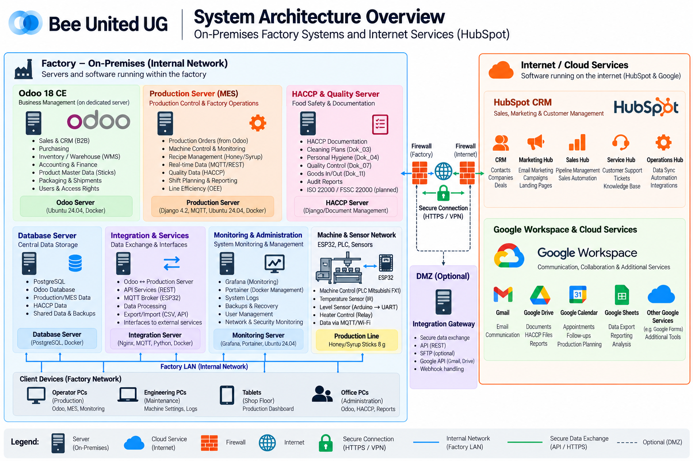
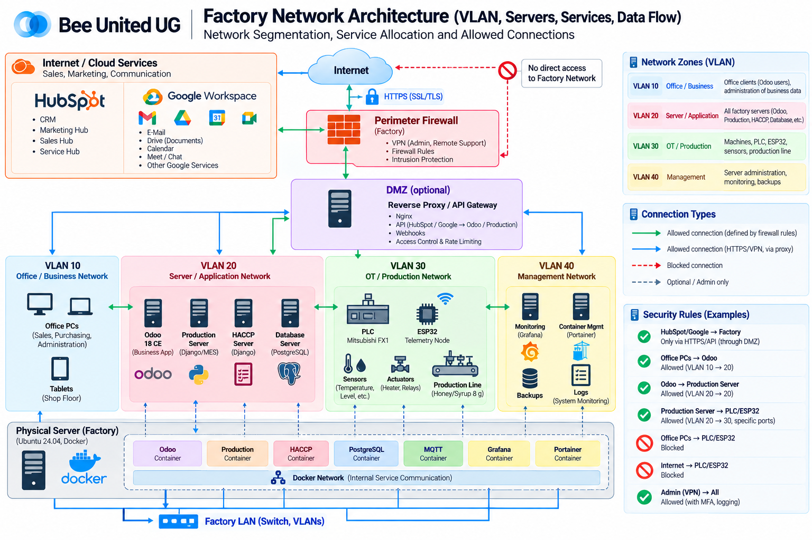
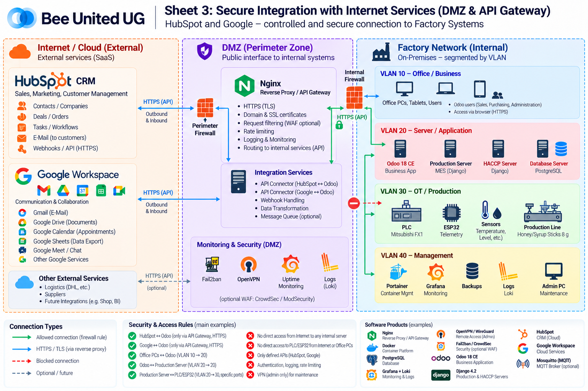
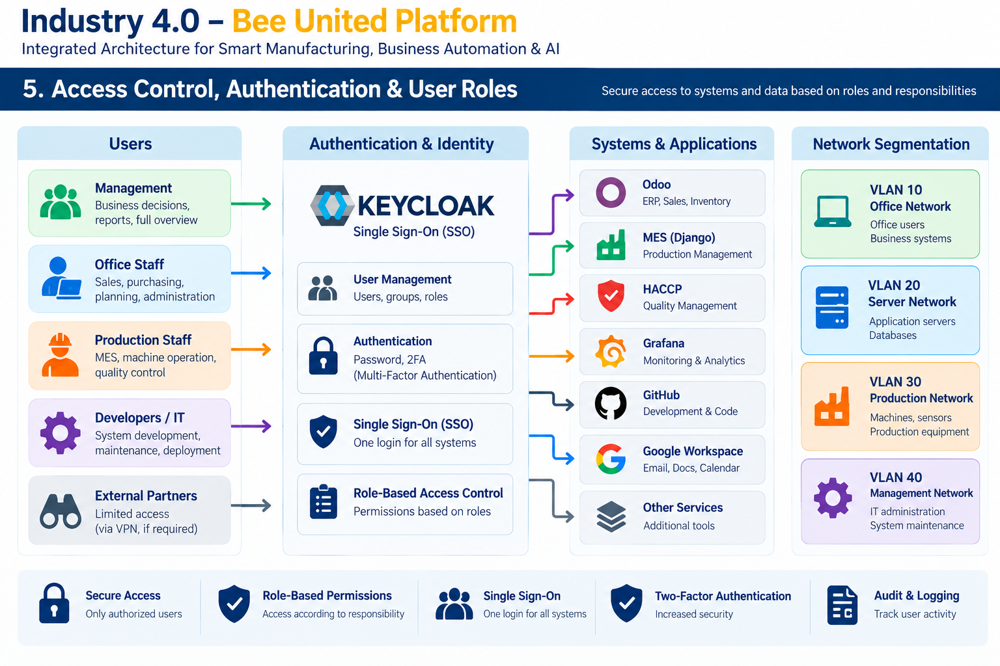

ARCHITECTURE MAP
System Architecture
Select a diagram to view it full screen. Use the Previous / Next controls to move between approved architecture sheets. These diagrams describe the target architecture; implementation status is tracked separately in GitHub Projects.

SHEET 02
System Architecture Overview
System Architecture Overview
Platform components and system boundaries

SHEET 03
Factory Network Architecture
Factory Network Architecture
Local network, servers and OT segmentation

SHEET 04
Secure Integration & API Gateway
Secure Integration & API Gateway
DMZ, Internet services and secure connections

SHEET 05
Access Control & User Roles
Access Control & User Roles
Identity, Keycloak, SSO, roles and network access
DEVELOPMENT TRACKING
Bee United Production Server — Project
Development statuses, work items and technical implementation belong in the GitHub Project board, not in the architecture slides. The project is currently private, so access requires permission.
Open Bee United Production Server — Development Board ↗